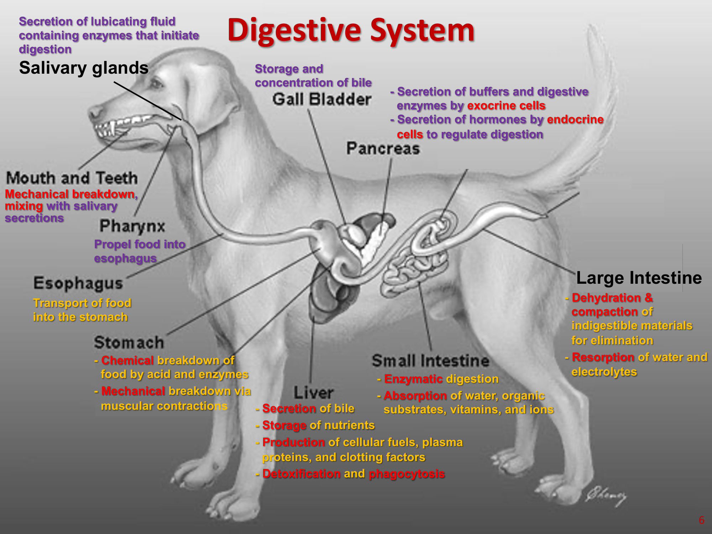
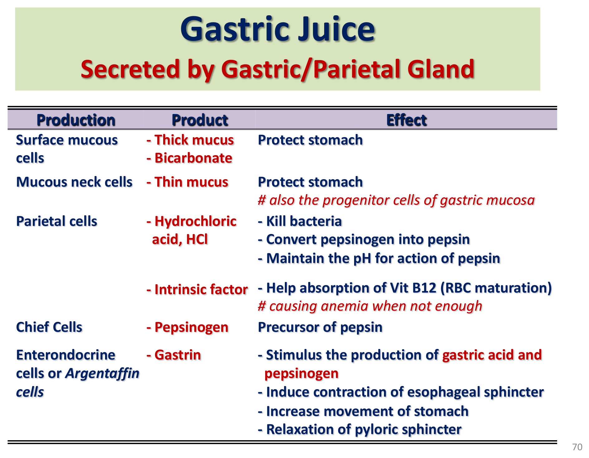
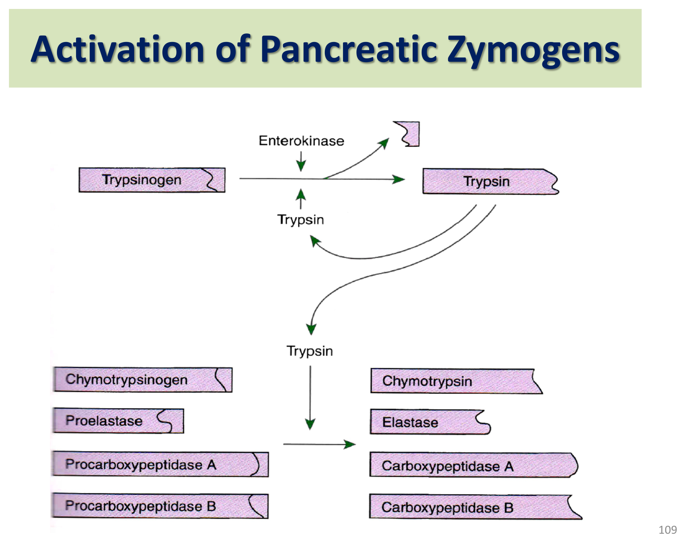
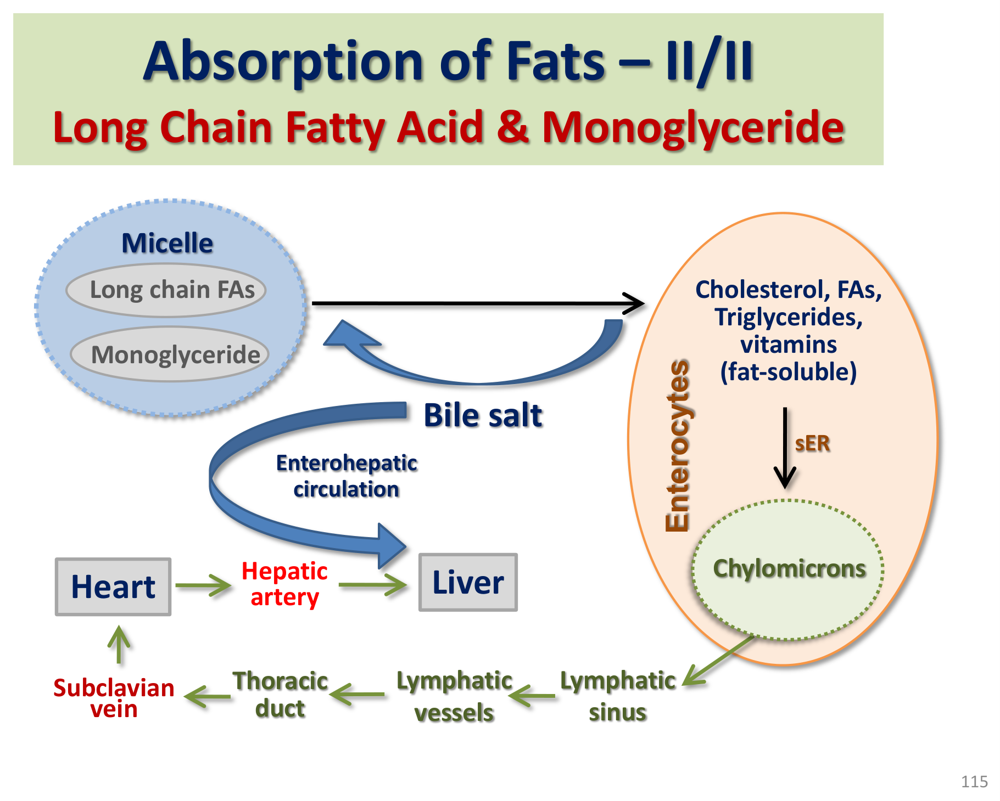

消化道總論與調控系統
單胃動物（如犬貓）的消化系統由消化道主體與附屬腺體共同組成，整體功能受兩層調控系統精密協調，理解此調控架構是理解後續所有分泌與蠕動章節的基礎。

消化道的五大基本功能
攝取（ingestion）→蠕動（peristalsis）→消化（digestion，物理＋化學）→吸收（absorption）→排便（defecation），加上貫穿全程的蠕動、儲存、分泌三大調控目標。
腸道壁的四層構造
由內而外：黏膜層（mucosa，含上皮細胞、固有層、黏膜肌層）→黏膜下層（submucosa）→肌肉層（muscularis，內環肌＋外縱肌）→漿膜層（serosa）。
兩層調控系統：內在 vs 外在
| 內在系統（腸壁內） | 外在系統（腸壁外） | |
|---|---|---|
| 神經 | 腸神經系統（Enteric Nervous System, ENS）——常被稱為「小腦」 | 迷走神經、內臟神經（splanchnic） |
| 內分泌 | 腸道激素：Secretin、Gastrin、CCK、GIP、Motilin | 醛固酮（Aldosterone） |
腸神經系統（ENS）：兩套神經叢
肌間神經叢（myenteric/Auerbach plexus）位於環肌與縱肌之間，主要調控蠕動；黏膜下神經叢（submucosal/Meissner plexus）位於黏膜下層，主要調控分泌與局部血流。兩套神經叢彼此透過中間神經元溝通，並經迷走／內臟／骨盆神經與中樞神經系統連結。ENS含感覺（化學／機械受器）、運動（支配血管平滑肌、腸道肌肉、腺體）神經元；卡哈爾間質細胞（Interstitial Cell of Cajal, ICC）是特化的平滑肌細胞，具節律點（pacemaker）活性，調控腸道肌肉收縮與蠕動節律。
腸道激素總表
| 激素 | 分泌細胞／位置 | 刺激因子 | 主要功能 |
|---|---|---|---|
| secretin | 十二指腸/空腸上段S細胞 | 脂肪、蛋白質、胃酸、膽酸 | 抑制胃酸分泌與胃蠕動；刺激胰臟/膽道分泌水與碳酸氫鹽 |
| gastrin | 胃幽門/十二指腸G細胞 | 蛋白質、胃擴張 | 刺激胃酸分泌（直接＋經ECL細胞釋放組織胺間接） |
| CCK（膽囊收縮素） | 十二指腸/空腸I細胞 | 脂肪、蛋白質 | 刺激膽囊收縮與胰酵素分泌；抑制胃排空與食慾 |
| GIP | 近端小腸K細胞 | 脂肪、葡萄糖 | 抑制胃酸分泌與胃蠕動；刺激胰島素分泌（incretin效應） |
| motilin | 十二指腸M細胞 | 禁食期間週期性上升 | 啟動遷移性運動複合波（MMC），調控空腹期蠕動 |
「腸道激素」的判定標準：須由腸道某處細胞分泌、經血液運送、影響另一處細胞、其分泌須受食物刺激。這與旁分泌（paracrine，如組織胺、體制素）、神經傳導物（neurocrine）不同——後兩者調控GI功能但不經血液運送至遠端。
胃腸道蠕動型態
腸胃道運動的四大目的：推進食糜、滯留食糜以利消化吸收、物理破碎並混合消化液、使食糜與吸收表面充分接觸。理解「推進性運動↑縮短通過時間、滯留性運動↑延長通過時間」的對比，是理解止瀉藥物設計邏輯（↑滯留性、↓推進性）的基礎。
胃的運動：近端儲存、遠端研磨
容受性舒張（receptive relaxation）：由副交感神經經腸神經叢介導（NO與血清素放鬆平滑肌），配合吞嚥中樞協調，使胃容積大幅增加而壓力僅小幅上升，作為食物暫存槽以控制食糜進入小腸的速率
強力蠕動波研磨混合食糜，每次蠕動波僅將少量食糜推入十二指腸，多數內容物被推回胃體以達混合效果——胃兼具「儲存槽」與「研磨機」雙重角色
胃排空的雙向調控
促進胃排空：迷走神經刺激遠端胃（經ACh）致強力蠕動；胃泌素增強胃蠕動；胃擴張與未消化蛋白/酒精。抑制胃排空（腸胃反射 enterogastric reflex）：十二指腸偵測到低pH、高滲透壓、脂肪或未消化蛋白時，經CCK（脂肪）、secretin（低pH）、GIP（醣類/脂肪）反射性抑制胃蠕動與排空——這是「十二指腸內容物品質決定胃排空速率」的核心機轉，確保小腸不會被超出其消化能力的食糜淹沒。
小腸運動：消化期 vs 空腹期
雙向、非推進性為主的局部收縮，將食糜與消化液混合、使食糜反覆接觸吸收表面，每次約3–4公分範圍
強力蠕動波緩慢掃過一大段腸道（有時可達迴腸末端），一個週期約75–120分鐘，由motilin濃度上升啟動；具「腸道清道夫」功能——清除未消化殘渣、防止上段腸道細菌過度增生
迴盲瓣與大腸運動
迴盲瓣（ileocecal sphincter）平時維持收縮，迴腸蠕動時放鬆使內容物進入結腸，結腸壓力升高時則反射性收縮更緊，防止結腸內容物逆流。大腸功能因物種而異：馬與兔的結腸大而複雜（發酵功能顯著，見「反芻動物消化生理學」章節後腸發酵比較）；犬貓結腸相對單純，主要功能為水電解質吸收與糞便儲存。大腸運動包括分節收縮（形成袋狀haustra，助混合與吸收/發酵）與逆蠕動（antiperistalsis，助儲存與吸收功能），同樣由ICC節律點驅動，節律點位置可能隨情況改變、不固定於單一部位。
唾液分泌
唾液具潤滑、抗菌、部分消化與體溫調節四大功能，是消化道最上游的分泌液，其調控方式也是消化腺體中的特例。
唾液的四大功能
- 潤滑與濕潤食物，利於吞嚥
- 抗菌：含抗體與抗菌酵素（溶菌酶lysozyme）
- 部分消化：唾液澱粉酶（雜食動物有，肉食動物無；在微鹼性環境下、主要於近端胃作用而非口腔）；舌脂酶（幼年動物才有，成年後消失）
- 蒸發散熱：犬貓經喘氣散熱依賴唾液蒸發，是重要的體溫調節途徑之一（見「體液電解質與體溫調節」章節）
唾液的調控：純神經性、唯一無內分泌調控的消化腺
唾液腺主要受副交感神經（顏面神經與舌咽神經，經膽鹼受體）調控，咀嚼與味蕾刺激是主要傳入訊號；交感神經（經β腎上腺素受體）也可刺激唾液分泌，與肉食動物準備攻擊時的流涎反應相關，與正常消化功能關聯較小。
巴夫洛夫（Ivan Pavlov）訓練狗聽到鈴聲即分泌唾液（制約反射，conditional reflex），是史上首次證明中樞神經系統可調控消化功能的經典實驗，也說明唾液腺是消化腺體中唯一完全沒有內分泌調控成分的特例——全部由神經直接調控。
反芻動物唾液成分與單胃動物截然不同：等張、富含碳酸氫鹽與磷酸鹽緩衝液、pH偏高，每日分泌量可達100–200公升（約等同全身細胞外液總量），核心功能是中和瘤胃發酵產生的酸（見「反芻動物消化生理學」章節）。
胃液分泌
胃腺體由多種特化細胞構成，分泌強酸性胃液進行化學消化，其分泌受三個時期的訊號精密調控。

胃酸的三大生理功能
- 使攝入蛋白質變性（三級構形改變），提高可消化性
- 移除抑制性片段，釋放完全活化的胃蛋白酶
- 提供胃蛋白酶最適作用環境（最適pH約2）
壁細胞胃酸分泌的四個輸入訊號
胃泌素、組織胺（經ECL嗜鉻樣細胞，受胃泌素與ACh刺激釋放）、乙醯膽鹼三者同時作用時對壁細胞產生最大刺激效果；體制素（somatostatin）則為抑制性訊號——胃內pH降至2時開始負回饋抑制胃泌素分泌，降至1時完全抑制，是防止胃酸過度分泌的自我保護機制。
胃酸分泌的三個時期
| 時期 | 觸發訊號 | 路徑 |
|---|---|---|
| 頭期 Cephalic | 看、聞、嚐、想像食物 | 大腦皮質／下視丘攝食中樞→延腦→迷走神經→胃腺（ACh、胜肽）→HCl/胃蛋白酶/胃泌素 |
| 胃期 Gastric | 食物進入胃：機械（胃壁擴張）＋化學（pH上升、胺基酸、酒精） | 局部Meissner神經叢反射＋迷走神經→胃泌素分泌→HCl/胃蛋白酶 |
| 腸期 Intestinal | 未消化蛋白進入十二指腸 | 腸胃泌素（enteric gastrin）輕度刺激胃液分泌；隨後轉為抑制（見下方） |
腸期後段：抑制性反射
十二指腸擴張、未消化蛋白/脂肪/酸/高低滲液體會經腸胃反射（enterogastric reflex）與secretin/CCK/GIP，抑制胃液分泌並降低胃蠕動——與前段「抑制胃排空」機轉共用同一組訊號與激素，是同一套保護性負回饋系統的兩種表現。
鹼潮 Alkaline Tide
壁細胞分泌H⁺進入胃腔的同時，會以HCO₃⁻的形式將等量鹼基釋入血液（碳酸酐酶催化），造成餐後短暫的血液鹼化，稱鹼潮，是消化生理學中常被忽略但概念上重要的酸鹼調節現象。
胃黏膜萎縮（慢性胃炎或自體免疫）可導致胃酸缺乏（achlorhydria），胃蛋白酶原即使分泌也因無酸無法活化，消化功能喪失；同時因壁細胞內在因子分泌不足，維生素B12吸收障礙（B12須先與內在因子結合、於迴腸吸收）導致惡性貧血（pernicious anemia）——胃切除或迴腸切除動物皆可能出現此併發症。消化性潰瘍常見病因包括胃酸過多、迷走神經過度刺激、幽門螺旋桿菌感染、藥物刺激（NSAIDs）、胃泌素瘤（Zollinger-Ellison症候群）。
胰臟外分泌
胰臟兼具內分泌（約1%，胰島）與外分泌（約99%，腺泡組織）雙重功能，外分泌部分是小腸消化最主要的酵素來源。
胰臟外分泌的兩種細胞
分泌超過10種不同消化酵素（蛋白酶、澱粉酶、脂肪酶等），多數以無活性酵素原（zymogen）形式分泌，避免胰臟自我消化
分泌大量碳酸氫鈉，中和自胃進入十二指腸的酸性食糜，為胰酵素創造最適作用環境
胰蛋白酶原活化級聯

這種以無活性酵素原形式分泌、於腸腔內才活化的設計，是消化道保護自身組織不被自身消化酵素破壞的關鍵安全機制——與「胃液分泌」章節胃蛋白酶原經胃酸活化的邏輯一致。
胰臟分泌的調控
受神經（頭期、胃期）與體液雙重調控：低pH食糜刺激十二指腸釋放secretin→刺激胰液中水與碳酸氫鹽的分泌（中和酸）；胜肽與脂肪刺激CCK釋放→刺激胰酵素分泌（消化蛋白質與脂肪）——兩種主要刺激因子分別對應胰液的兩大功能成分（緩衝液 vs 消化酵素），是重要的考試對比記憶點。
肝臟膽汁與腸肝循環
肝臟是全身代謝的樞紐器官，具消化、內分泌、凝血、血漿蛋白合成、有機物代謝、排泄解毒等多重功能，本節聚焦其消化相關的膽汁分泌功能。
肝臟功能總覽（消化相關為主）
- 外分泌（消化）功能：合成分泌膽鹽，助脂肪消化吸收；分泌富含碳酸氫鹽的膽汁，中和十二指腸酸性
- 內分泌功能：分泌IGF-1、活化維生素D、T4、血管收縮素原
- 凝血功能：合成凝血酶原與纖維蛋白原
- 血漿蛋白合成：白蛋白、急性期蛋白
- 排泄解毒功能：分泌膽紅素等膽色素、經膽汁排除內外源性有機物與重金屬、生物轉化代謝異物、清除老化紅血球
膽酸與膽色素
肝細胞滑面內質網合成，通常以鈉鹽形式分泌，具親水／親脂雙重性質，能溶解細胞膜成分（磷脂、膽固醇）——是脂肪消化「乳化」的關鍵成分（見「脂肪消化吸收」章節）
血紅素卟啉的分解產物，主要為膽紅素（綠色），是紅血球正常代謝週轉的產物；於腸腔內經細菌轉為尿膽素原（urobilinogen），是糞便呈現顏色的來源；本身不具消化功能，純屬代謝廢物
膽囊與腸肝循環
膽囊負責儲存與濃縮膽汁（經再吸收Na⁺/Cl⁻/HCO₃⁻，水分被動跟隨），由歐蒂氏括約肌（Sphincter of Oddi）控制膽汁排放；馬與大鼠沒有膽囊，是重要的物種比較考點。食糜（尤其脂肪）進入十二指腸刺激CCK釋放，引發膽囊收縮排出膽汁；膽酸在迴腸經鈉共同運輸被大量再吸收，經門靜脈送回肝臟——此再吸收會正回饋刺激肝臟合成更多膽汁，形成腸肝循環（enterohepatic circulation），使有限的膽酸池能反覆高效利用，而非每次消化都需從頭合成。
膽結石（約80%為膽固醇結石、20%為色素性結石）成因包括膽鹽不足、卵磷脂不足或膽固醇過剩；大結石阻塞總膽管會造成脂肪吸收障礙（脂肪痢steatorrhea）與阻塞性黃疸，若同時阻塞胰管可併發胰臟炎。黃疸分兩類：溶血性黃疸（紅血球破壞增加，膽紅素生成超過肝臟處理能力）與阻塞性黃疸（膽管阻塞，膽紅素無法排出），兩者病因與處置方向截然不同，是黃疸動物臨床鑑別診斷的核心分類。
醣類消化吸收
醣類消化分「管腔期（不完全水解）」與「膜期（完全水解）」兩階段，理解此分期架構同樣適用於蛋白質消化（見下節）。
醣類消化的兩階段
唾液澱粉酶（口腔/近端胃，雜食動物）與胰澱粉酶（十二指腸）將澱粉水解為麥芽糖、異麥芽糖、麥芽三糖等寡糖，屬不完全水解
腸上皮細胞刷狀緣上的雙醣酶（乳糖酶、蔗糖酶、麥芽糖酶等）將寡糖與雙醣完全水解為單醣（葡萄糖、半乳糖、果糖），屬完全水解，是唯一能被吸收的型式
單醣的吸收機轉
葡萄糖與半乳糖經次級主動運輸（Na⁺共同運輸蛋白SGLT）吸收，利用Na⁺/K⁺-ATPase建立的Na⁺梯度驅動；果糖則經促進性擴散（GLUT5）吸收，不需Na⁺梯度。吸收進入腸上皮細胞後，皆經基底外側膜的GLUT2以促進性擴散方式進入微血管，經門靜脈送往肝臟。
蛋白質消化吸收
蛋白質消化涉及的酵素種類遠多於醣類消化，因蛋白質分子結構複雜，需要多種切位不同的酵素協同作用才能完全水解。
兩類蛋白質分解酵素
切斷胜肽鏈內部（非末端）的胜肽鍵。代表：胃蛋白酶（pepsin）、胰蛋白酶（trypsin）、糜蛋白酶（chymotrypsin）、彈性蛋白酶（elastase）
從胜肽鏈末端切下單一胺基酸。代表：羧肽酶A/B（carboxypeptidase A/B，胰臟分泌）
所有這些蛋白酶皆以無活性酵素原形式由胃腺或胰臟分泌（見「胃液分泌」與「胰臟外分泌」章節活化機轉），是防止消化道自我消化的關鍵安全設計。
胃的蛋白質消化作用重要但非必要——缺乏胃（如胃切除）的動物，只要胰臟功能正常、並採取少量多餐的軟質濕食餵食策略，仍能完整消化蛋白質，這是理解胃與胰臟在蛋白質消化中相對重要性的關鍵概念。
胺基酸的吸收與運輸
蛋白質最終水解為胺基酸、雙胜肽、三胜肽，皆可被腸上皮細胞吸收：胺基酸經Na⁺共同運輸的次級主動運輸吸收；雙/三胜肽則經另一套H⁺共同運輸機轉吸收後，於細胞內被胞內肽酶進一步水解為胺基酸，再經基底外側膜擴散或主動運輸進入微血管、經門靜脈送往肝臟。
脂肪消化吸收
脂肪消化面臨的根本問題是「脂溶性物質必須在水性腸腔環境中被水溶性酵素消化」，因此脂肪消化吸收流程遠比醣類/蛋白質複雜，多一道「乳化」與「微胞形成」的步驟。
脂肪消化吸收的四階段
短鏈脂肪酸 vs 長鏈脂肪酸的吸收路徑分歧
水溶性較高，可直接擴散通過腸上皮，經門靜脈直接送往肝臟（與醣類/胺基酸吸收路徑相同）
於腸上皮細胞滑面內質網重新酯化為三酸甘油酯，與膽固醇、磷脂、蛋白質組裝形成乳糜微粒（chylomicron）——因體積過大無法穿過微血管基底膜，改經淋巴管運送

大量乳糜微粒進入血液循環會使血漿暫時呈現乳白色混濁，稱餐後脂血症（postprandial lipemia），通常於餐後1–2小時出現，屬正常生理現象；但若持續存在或程度異常，需考慮糖尿病、肝脂沉積症或甲狀腺機能低下等病理性脂血症的可能，餐後脂血症本身也是心血管疾病的風險因子之一。
水分與電解質吸收
維持體內水分與電解質（尤其Na⁺、K⁺、Cl⁻、HCO₃⁻）供給是延續生命的高優先事項，腸道吸收機轉隨腸道節段而異，理解此分布規律有助於理解不同腸道疾病造成的電解質失衡型態。
鈉、氯、鉀的吸收機轉
- 鈉：迴腸與結腸吸收活性最高，經多種機轉（Na⁺共同運輸、Na⁺/H⁺交換等）主動吸收
- 氯：主要機轉是與Na⁺偶聯的葡萄糖/胺基酸共同運輸（電中性伴隨吸收），也可經Cl⁻-HCO₃⁻交換
- 鉀：飲食通常富含鉀，腸腔內濃度高，主要經細胞旁路徑被動吸收（隨水分吸收而濃縮）；遠端結腸另有H⁺/K⁺-ATPase主動調控
電解質吸收機轉隨腸道節段的分布規律
整體趨勢：鈉共同運輸機轉在十二指腸/空腸最活躍，往遠端遞減；相對地，氯偶聯鈉吸收、氯-碳酸氫根交換、碳酸氫根吸收、鉀吸收機轉則在結腸（尤其下段）最活躍——這代表小腸上段主要負責吸收營養物質偶聯的電解質，遠端結腸則負責更精細的水電解質最終調節，此規律與「腎臟生理學基礎」章節腎小管「近端大量吸收、遠端精細調節」的分工邏輯遙相呼應。
腹瀉本質是食糜通過小腸、糞便通過大腸的速度過快，來不及進行正常的吸收作用；腸胃道感染是最常見病因，受感染部位分泌速度大增、腸道運動活性也增加數倍，這其實是腸道沖洗感染源的重要防禦機制。霍亂由霍亂弧菌毒素引起，刺激迴腸與結腸過度分泌電解質與液體（並增強Cl⁻-HCO₃⁻交換，導致大量碳酸氫鈉分泌入小腸），治療核心是及時補充流失的水分與電解質，適當治療下霍亂致死率極低，未治療則致死率超過50%。
新生兒消化特殊性
新生兒消化系統在出生後最初數小時至數週，具備成年動物所沒有的特殊功能，核心目的是使新生兒得以完整吸收初乳中的抗體蛋白質，是「生殖生理學」章節被動免疫轉移的消化生理基礎。
完整蛋白質吸收的窗口期
多數物種的消化功能核心之一是分解蛋白質以獲取胺基酸營養，但在馬、牛、羊、豬等胎盤無法傳輸抗體的物種（見「妊娠、分娩與泌乳生理」章節胎盤分類），新生兒必須能完整吸收初乳中的免疫球蛋白才能獲得被動免疫。為達成此目的，新生兒消化系統出生後數日內出現特殊調適：
- 胃酸分泌延遲數日，避免蛋白質被過早變性
- 胰臟功能發育同樣延遲，避免胰蛋白酶消化作用過早成熟
- 出生時特有的特化腸上皮細胞能將腸腔內完整的可溶性蛋白質胞吞（engulf），並釋放至細胞側邊空間進入循環——此特化細胞於出生後約24小時內開始消失
雙醣酶活性的成熟轉換：乳糖酶→麥芽糖酶
新生兒期腸道乳糖酶活性極高（乳汁中乳糖是新生兒主要醣類來源），麥芽糖酶活性則微弱或缺乏（出生後數週才發育成熟，用以消化澱粉水解產物）；多數成年動物的乳糖酶活性則幾乎完全消失——這是成年動物（包含人類多數族群）飲用大量乳製品易腹瀉（乳糖不耐symptom）的生理基礎，也是斷奶時機需考量消化酵素發育進程的重要概念。
燃料恆定總論
從本節開始進入「吸收後營養代謝」主題：食物並非持續進入體內，但細胞卻需要不間斷的能量供應，身體必須有一套精密系統緩衝「進食-空腹」週期，維持燃料供需平衡（fuel homeostasis）。
燃料恆定的核心矛盾與解方
腸道並非儲存庫，消化吸收速率取決於食物本身的化學組成，而不會依動物當下的能量需求調節；因此身體須有獨立於消化系統之外的緩衝機制，於進食後儲存過剩燃料、於空腹期動員儲存燃料釋出，維持血液中燃料濃度（尤其血糖）的相對穩定。此恆定機制由胰島素-升糖素軸、下視丘-腦垂體軸、中樞神經系統共同協調，核心激素包括胰島素、升糖素、腎上腺素、糖皮質素、生長激素。
四大主要代謝燃料
| 燃料 | 特性 |
|---|---|
| 葡萄糖 Glucose | 多數動物（如犬）進食後的基礎燃料；中樞神經系統在多數情況下唯一能利用的燃料，維持穩定血糖供應對存活至關重要 |
| 胺基酸 Amino Acids | 除作為蛋白質建構單元外，也是重要能量來源，吸收期供應肝細胞大部分能量需求 |
| 脂肪酸 Fatty Acids | 體內最主要的能量儲存形式（以三酸甘油酯儲存於脂肪組織） |
| 酮體 Ketone Bodies | 脂肪衍生、水溶性代謝物，可作為葡萄糖的替代燃料，能通過血腦障壁供應中樞神經系統於長期缺乏飲食能量時使用 |
TCA循環：燃料的共同終點爐
TCA（Krebs）循環是幾乎所有身體燃料最終被完全氧化為CO₂與H₂O、釋出能量（以ATP形式捕捉）的共同路徑；除完全氧化功能外，TCA循環中間產物也是不同燃料間相互轉換的樞紐（如胺基酸轉換為葡萄糖的糖質新生路徑即經此），TCA循環活性存在於幾乎所有組織（紅血球除外，因缺乏粒線體，僅能依賴糖解與磷酸戊糖路徑）。
吸收期代謝
進食後的吸收期，肝臟與周邊組織的代謝活動協調一致地將吸收進來的營養物質導向儲存分子與儲存位置，核心驅動激素是胰島素。
葡萄糖：肝臟優先儲存為肝醣，過剩者轉為脂肪
甚至在葡萄糖尚未被大量吸收前，腸道激素（如GIP）即已開始刺激胰島素分泌，預先使肝臟與其他組織「整裝待發」；門靜脈血流經肝臟時，大部分吸收的葡萄糖被肝臟攝取，於胰島素作用下合成肝醣（肝醣生成 glycogenesis）——此過程調節了葡萄糖從腸道流向全身循環的速度，避免餐後血糖過度飆升。然而肝臟肝醣儲存量有限（通常不超過肝重10%），無法容納全部吸收的葡萄糖，過剩葡萄糖經脂肪酸新生（FA synthesis）轉化為脂肪，經極低密度脂蛋白（VLDL）運送出肝臟至脂肪組織儲存或肌肉直接利用。
胺基酸：肝臟大量攝取，用於合成血漿蛋白或轉為醣類/脂肪
飲食中的麩胺酸與大部分天冬胺酸於吸收時即被腸上皮細胞代謝、轉為丙胺酸（故門靜脈血中麩胺酸極少）；胺基酸與TCA循環中間產物（α-酮戊二酸、草醯乙酸）結構相似，經轉胺酶（transaminase）可與酮酸互相轉換，是體內非必需胺基酸合成與胺基酸間氮平衡調節的基礎。肝臟攝取多數胺基酸後，經去胺作用轉為酮酸類似物，進入醣類代謝路徑——可完全氧化產能、轉為葡萄糖/肝醣、或轉入脂肪酸合成路徑；但支鏈胺基酸（BCAA）較不易被肝臟攝取（周邊血中濃度相對較高），主要留待肌肉利用（見下節空腹期肌肉代謝）。多數血漿蛋白（白蛋白、凝血因子等）皆由肝臟合成，是胺基酸的重要去路之一。
脂肪：雙路徑堆積於脂肪組織
脂肪組織於吸收期經兩種機轉累積三酸甘油酯：(1) 攝取乳糜微粒（來自腸道）與VLDL（來自肝臟）中的脂肪酸，由微血管內皮表面的脂蛋白脂酶（LPL）水解後轉入脂肪細胞——LPL對胰島素的敏感度依組織而異，脂肪組織LPL受胰島素刺激活化；(2) 直接以葡萄糖為原料進行脂肪酸從頭合成，同樣受胰島素促進。
肌肉：胰島素促進肝醣合成與蛋白質合成
胰島素同樣促進肌肉攝取葡萄糖與胺基酸；肌肉攝取的葡萄糖同樣合成肝醣，但肌肉肝醣無法直接釋放葡萄糖回血液（缺乏glucose-6-phosphatase），僅供肌肉自身代謝使用，與肝醣可調節全身血糖的功能截然不同；肌肉蛋白質除運動/姿勢維持功能外，也是體內最大的胺基酸儲存庫，吸收期蛋白質合成大於分解，胺基酸池呈淨增加。
吸收後期代謝
餐間空腹期（通常數小時），身體代謝模式由「儲存」切換為「動員釋出」，核心驅動力是胰島素濃度下降、升糖素濃度相對上升，胰島素/升糖素比值的變化比兩者絕對濃度更重要。
調控燃料利用/生成的關鍵酵素邏輯
促進燃料動員與利用的酵素經磷酸化而活化（升糖素促進磷酸化）；促進燃料儲存的酵素則經磷酸化而失活（胰島素則抑制磷酸化、促進去磷酸化）。四個關鍵酵素：肝醣合成酶（儲存，被磷酸化抑制）vs 肝醣磷酸化酶（分解，被磷酸化活化）；磷酸果糖激酶（糖解，被磷酸化抑制）vs 果糖-1,6-雙磷酸酶（糖質新生，被磷酸化活化）。
肝臟：由葡萄糖利用轉為葡萄糖生成
肝醣分解（glycogenolysis）在輕度運動下可支撐血糖需求約6–12小時，劇烈運動下僅約20分鐘即耗盡；隨後肝臟轉而依賴糖質新生（gluconeogenesis，僅發生於肝臟，腎臟僅具有限能力），以丙酮酸或TCA循環中間產物為原料生成葡萄糖——胺基酸（來自肌肉分解）是糖質新生最主要的前驅物庫存來源，升糖素整體效果是將肝臟轉變為「葡萄糖生產工廠」。
肌肉：胺基酸動員與丙胺酸循環
胰島素下降使肌肉細胞對葡萄糖與胺基酸的攝取減少，肌肉蛋白質分解增加以維持胺基酸池、供應能量所需；支鏈胺基酸（占肌肉胺基酸約三分之一）是空腹期肌肉細胞最主要的能量來源，其代謝產生的α-酮酸經轉胺作用形成丙胺酸釋出，經血液送往肝臟進行糖質新生（丙胺酸循環）——因BCAA本身不易被肝臟直接攝取利用，須先轉為丙胺酸才能有效轉運至肝臟；肝臟接收胺基酸脫胺後產生的尿素（肝臟是體內唯一能合成尿素的器官）經血液送往腎臟排除。糖皮質素（cortisol）同樣促進肌肉蛋白質分解與胺基酸動員，並刺激肝臟糖質新生，整體效果是升高血糖（見「內分泌生理II」章節）；升糖素在正常生理狀況下對肌肉組織無直接作用，主要作用標的是肝臟。
脂肪組織：荷爾蒙敏感性脂肪酶動員游離脂肪酸
兒茶酚胺（腎上腺素、正腎上腺素）經脂肪細胞β腎上腺素受體→G蛋白→cAMP→PKA路徑（見「細胞訊息傳遞」章節）活化荷爾蒙敏感性脂肪酶（Hormone-Sensitive Lipase, HSL），水解三酸甘油酯釋出游離脂肪酸與甘油；胰島素透過促進HSL去磷酸化而抑制此作用，是調控脂肪動員最重要的負向調節因子；升糖素對脂肪組織也有部分促進HSL磷酸化的作用，但重要性遠不及對肝臟的作用。釋出的脂肪酸與白蛋白可逆結合，稱非酯化脂肪酸（NEFA），可直接供多數組織利用，大部分則被肝臟攝取用於酮體生成或重新合成VLDL。
飢餓與長期能量剝奪：酮體生成
長期禁食或能量嚴重不足時，身體優先保留葡萄糖與胺基酸（避免過度消耗肌肉），轉而大量依賴脂肪與酮體供能。NEFA進入肝臟後有三條路徑：小部分完全氧化產能、部分經酯化重新形成三酸甘油酯、大部分在低胰島素/升糖素比值、低血糖、脂肪酸供應充足的條件下轉為酮體生成。酮體生成速率由肉鹼棕櫚醯轉移酶I（CPT-I）活性決定——CPT-I將脂肪酸（先與肉鹼結合）運入粒線體，是酮體生成的限速步驟；CPT-I活性受丙二醯輔酶A（malonyl-CoA，脂肪酸合成路徑中間產物）抑制：高胰島素/升糖素比值時malonyl-CoA濃度高、CPT-I受抑制（此時葡萄糖正被導向脂肪合成，不宜同時大量生酮）；低胰島素/升糖素比值時malonyl-CoA濃度低、CPT-I活性高，酮體大量生成。
糖尿病（胰臟無法分泌胰島素）動物的胰島素/升糖素比值持續處於極低狀態：脂肪組織HSL無法被胰島素抑制（NEFA大量釋出）、肝臟malonyl-CoA濃度低使CPT-I完全活化——即使血糖濃度已經很高，脂肪動員與酮體生成仍不受控制地全速進行，導致糖尿病酮酸中毒（Diabetic Ketoacidosis, DKA），是「高血糖同時併發嚴重酮酸血症」這個看似矛盾現象的完整生理機轉解釋。
脂肪酸無法淨轉換為葡萄糖
脂肪酸經β氧化產生的乙醯輔酶A（2個碳）雖可進入TCA循環，但循環消耗乙醯輔酶A的同時不會有淨草醯乙酸生成（乙醯輔酶A進入循環時消耗一個草醯乙酸、循環一圈後又重新生成一個，淨增量為零），因此脂肪酸無法作為糖質新生的淨碳源，這與胺基酸（碳骨架可直接以草醯乙酸等中間產物淨進入循環）形成鮮明對比，是重要的生化基礎概念。
生長激素在長期能量剝奪下的角色
多物種在長期能量剝奪下血中生長激素（GH）濃度上升，GH與胰島素作用相互拮抗，即使胰島素濃度正常也能促使血糖上升；GH也具保留蛋白質、促進脂肪動員的直接效果，整體將周邊組織燃料利用型態從葡萄糖/胺基酸導向酮體/脂肪酸，是長期飢餓狀態下保護肌肉蛋白質的重要輔助機轉（見「內分泌生理I」章節GH調控回顧）。
反芻動物燃料代謝比較
反芻動物因獨特的前胃發酵消化模式（見「反芻動物消化生理學」章節），其燃料代謝呈現與單胃動物截然不同的特殊型態，是重要的跨章節整合比較考點。
反芻動物處於「永久性糖質新生」狀態
反芻動物飲食中的醣類幾乎完全在前胃經微生物發酵為VFA，幾乎沒有可消化醣類以葡萄糖形式進入小腸被直接吸收；因此反芻動物幾乎所有可利用葡萄糖皆須經糖質新生生成，與單胃動物「進食後直接大量吸收葡萄糖」的模式形成鮮明對比，反芻動物可謂持續處於類似單胃動物「空腹期」的糖質新生代謝狀態。
丙酸是反芻動物最重要的糖質新生前驅物
三大VFA中，僅丙酸（propionate）能進入TCA循環的琥珀酸階段、淨生成草醯乙酸，成為糖質新生的有效原料；乙酸與丁酸則皆以乙醯輔酶A形式進入TCA循環（與單胃動物脂肪酸代謝相同邏輯），無法淨轉換為葡萄糖。丙酸供應量因此直接決定反芻動物的葡萄糖供應能力，是反芻動物營養學中極重要的核心概念。
脂肪酸合成的原料與部位皆與單胃動物不同
反芻動物脂肪酸從乙酸（而非葡萄糖）合成；且合成部位僅限於脂肪組織（不同於部分單胃動物物種肝臟也是脂肪酸合成的重要場所），肝臟角色相對次要。哺乳動物乳腺合成乳脂肪所需的脂肪酸，來源同樣是乙酸或酮體，而非葡萄糖——葡萄糖在反芻動物體內唯一直接用於乳脂肪合成的角色，僅是提供三酸甘油酯骨架的甘油部分。
「VFA佔比乙酸最高但無法生糖、丙酸佔比較低卻是唯一有效生糖前驅物」的反差，是反芻動物營養學中一個常考且容易混淆的核心對比——飼糧調控丙酸相對比例（如提高精料比例）對乳牛泌乳期血糖與能量供應具直接臨床意義（見「反芻動物消化生理學」章節VFA比例與飼糧關係）。
學習重點整理
本章橫跨消化道調控、分泌、三大營養素消化吸收與吸收後代謝四大主題，核心是「食糜依序經歷腔內不完全水解→膜上完全水解→特定吸收機轉」與「胰島素/升糖素比值切換儲存/動員代謝模式」兩條主軸。考題常考「腸道激素刺激因子與功能配對」「三大營養素吸收路徑差異」「酮體生成調控（CPT-1/malonyl-CoA）」「反芻動物VFA生糖能力」。
練習題
涵蓋消化道調控、分泌機轉、三大營養素消化吸收、吸收後代謝等章節重點，題型參照國考與轉學考命題方向（含機轉推理題），先自己作答再點「顯示答案」核對。
唾液腺主要受副交感神經（顏面神經與舌咽神經）調控，也接受交感神經影響（與肉食動物攻擊前流涎相關），是消化腺體中唯一完全沒有內分泌調控成分的特例，巴夫洛夫的制約反射實驗即以唾液分泌證明中樞神經系統可調控消化功能。
CCK由十二指腸/空腸I細胞分泌，主要受脂肪與蛋白質刺激，功能包括抑制胃排空與食慾，同時刺激膽囊收縮與胰酵素分泌；secretin主要對應低pH刺激，GIP對應脂肪與葡萄糖，gastrin則是刺激胃酸分泌而非抑制胃排空，motilin則啟動空腹期MMC。
胃的蛋白質消化作用重要但非必要，缺乏胃的動物只要胰臟功能正常，並採取少量多餐的軟質濕食餵食策略，仍能完整消化蛋白質；這也解釋了為何酸與胰蛋白酶消化在演化上具有一定的功能重疊與備援設計。
短鏈脂肪酸水溶性較高，可直接擴散通過腸上皮進入微血管、經門靜脈送往肝臟，與醣類/胺基酸吸收路徑相同；長鏈脂肪酸與單酸甘油酯則須先在腸上皮細胞滑面內質網重新酯化為三酸甘油酯，與膽固醇、磷脂、蛋白質組裝成乳糜微粒，因體積過大無法穿過微血管基底膜，須改經淋巴管、胸管，最終由鎖骨下靜脈進入體循環。
BCAA因不易被肝臟直接攝取利用（周邊血中濃度相對較高），肌肉細胞會先將BCAA代謝產生的α-酮酸經轉胺作用形成丙胺酸，再釋出至血液運送至肝臟進行糖質新生，此機制稱丙胺酸循環，是肌肉蛋白質分解產物有效轉運至肝臟合成葡萄糖的關鍵路徑。
正常生理狀態下，脂肪動員（經HSL）與酮體生成（經CPT-1）主要受胰島素/升糖素比值調控：胰島素能抑制HSL活性（減少脂肪酸釋出）、也能透過促進脂肪酸合成使malonyl-CoA濃度上升，進而抑制CPT-1活性、減少脂肪酸進入粒線體生酮。糖尿病動物因胰臟無法分泌胰島素，胰島素/升糖素比值持續處於極低狀態：脂肪組織的HSL無法被胰島素抑制，導致大量游離脂肪酸（NEFA）從脂肪組織釋出；同時肝臟因缺乏胰島素刺激的脂肪酸合成路徑，malonyl-CoA濃度低，對CPT-1的抑制解除，CPT-1完全活化，使大量脂肪酸得以進入粒線體轉為酮體。這兩個環節同時失控，導致即使血糖濃度已經很高（因葡萄糖無法有效進入細胞利用），肝臟仍持續大量生成酮體，最終造成嚴重的酮酸中毒，這正是「高血糖」與「酮酸中毒」兩個看似矛盾的現象能同時出現在糖尿病患者身上的完整生理機轉。
丙酸進入TCA循環時是從琥珀酸階段進入，能淨生成草醯乙酸（糖質新生的起始代謝物），因此是三大VFA中唯一能有效支持葡萄糖生成的前驅物；乙酸與丁酸則皆以乙醯輔酶A形式進入TCA循環，如同單胃動物的脂肪酸代謝一樣，循環一圈後沒有淨草醯乙酸生成，因此無法淨轉換為葡萄糖，這是反芻動物營養學極重要的核心概念，也是丙酸相對比例對乳牛泌乳期血糖供應具直接臨床意義的原因。